Створення українізатора 2.0
Цей посібник створений як розширення та вдосконалення посібника piggsy. Він не дублює інформацію, а пропонує додаткові роз’яснення, приклади та нові інструменти. Рекомендується ознайомитися з обома посібниками. Усе, що описано в цьому посібнику, засноване на власному досвіді автора.
Останні зміни: 14.10.2025.
Подякувати автору: monobank
Telegram: Галицький Розбишака
Discord: .hikaro
Unity
Текст
Експортуйте і працюйте завжди з JSON, його простіше обслуговувати, простіше парсити, простіше знаходити зламані рядки.
> Види JSON:
-
Весь текст в одному рядку
Використовуйте онлайн-конвертер JSON to CSV.
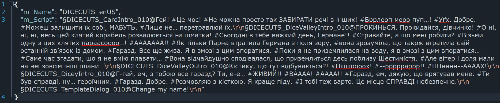
Для перетворення .csv назад в .json використовуйте онлайн-конвертер CSV to JSON. Приберіть зайві [ ], які встановлюються за замовчуванням, вони не потрібні.
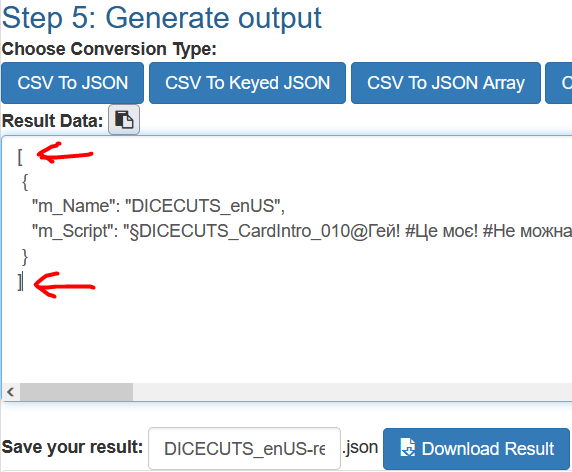
❗️ Зверніть увагу: онлайн-конвертер зберігає .json не з \r\n, як це інколи буває в оригіналі, а лише з \n. Через цю дрібницю у мене траплялися баги з діалогами в одній з ігор. Виправити це можна за допомогою Notepad++: відкрийте всі ваші конвертовані .json і замініть потрібні символи.
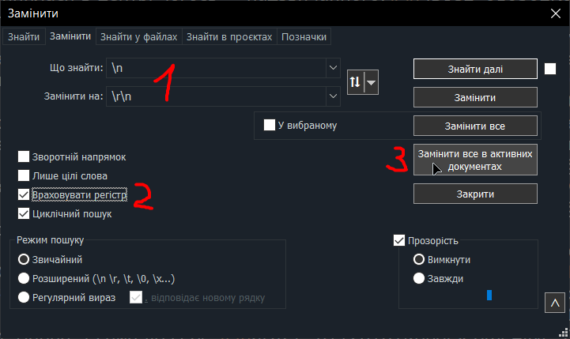
-
Багатомовні масиви
Використовуйте авторський інструмент Array Localization Tool, який підтримує чотири види масивів. Якщо ваш масив не підтримується, зверніться до автора програми. Перекладайте тексти прямо в програмі або експортуйте в CSV для перекладу деінде.
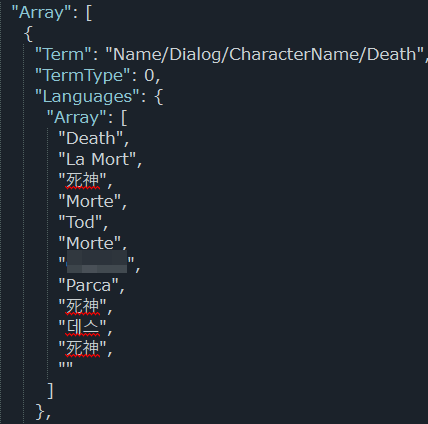
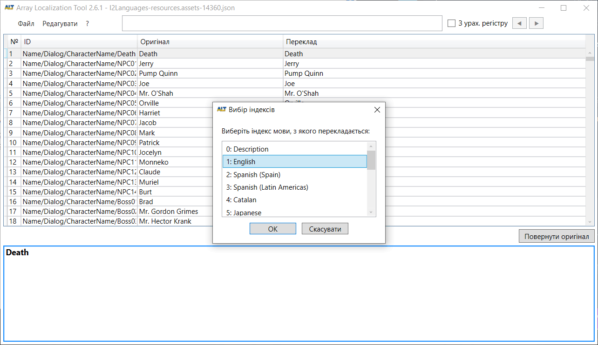
> Імпорт
❗️ Увага: Якщо ви використовуєте UABEA для роботи з .assets та .bundle Unity, майте на увазі: в програми є баг, через який .json може імпортуватися некоректно з першого разу. Завжди перевіряйте файл за допомогою кнопки View Data. Якщо з’являється повідомлення Asset failed to deserialize — повторіть імпорт .json.
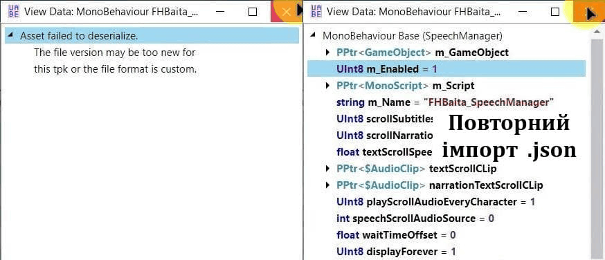
Новий інструмент UABEANext позбавлений цієї проблеми — імпортування завжди проходить успішно. Проте програма досі в розробці.
.Bundle та catalog.json
Для роботи з файлами .bundle краще користуйтеся UABEANext, попри його тимчасові недоліки, адже UABEA має проблеми з новими версіями формату Unity-асетів.
Для патчингу catalog.json використовуйте покращений мною інструмент CatalogTool, у якому виправлено роботу з бандлами, що містять символи # у назвах, та додано функцію Drag & Drop для зручного патчингу без ручного введення шляху.
Це консольна утиліта, просто перетягніть catalog.json на .exe програми.
Шрифт
Для редагування оригінальних .ttf або .otf шрифтів можна використовувати FontLab, FontForge або FontCreator.
Для зручного об’єднання згенерованих гліфів TMP/2D шрифтів з оригінальними MonoBehaviour використовуйте авторську програму Atlas MonoBehaviour Merger. Підтримується .json та .txt розширення MonoBehaviour файлу.
Unreal Engine 4 & 5
AES захист та .sig файл
Для швидкого пошуку AES-ключа зручно користуватися сайтом AES Dumpster.
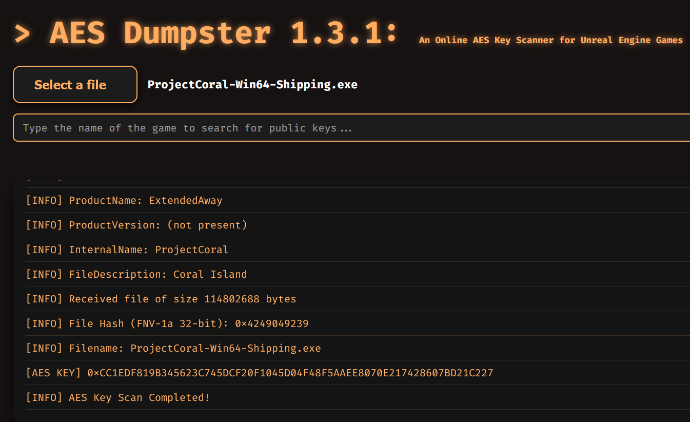
Якщо у вашій грі використовується AES-захист разом із .sig файлами у теці Paks, скористайтеся інструментом Unreal Engine Signature Check Bypasser (один з авторів українець). Його потрібно розпаковувати у теку Binaries/Win64 поряд з .exe, так, обидва .dll та .asi.
Якщо на вашій грі це не спрацювало, створіть issue в репозиторії авторів щодо цього.
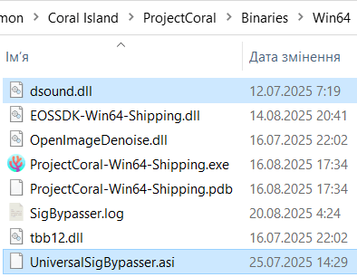
Це дозволить завантажувати сторонні .pak файли грою без необхідності ручного прописування -fileopenlog у «Параметрах запуску» властивостей гри в Steam.
❗️ Не забудьте додати .dll та .asi файли у архів разом із перекладом для решти гравців. ❗️
Текст
Для перекладу та роботи з .locres файлами використовуйте покращену версію UE Localizations Tool. Також підходить для перекладу .uasset та .umap файлів (Пункт меню програми Налаштування — Підтримка .uasset/.umap — Відкрити бажаний .uasset/.umap.), при умові, що вони не захищені .usmap ключем.
❗️ Не намагайтеся перекладати захищені .uasset/.umap, ви отримаєте неповний текст та пошкодите файл при збереженні. ❗️
Для об’єднання перекладу з новим .locres після оновлення гри використовуйте авторську CSV Merger Tool.
Як дізнатись, чи .uasset/.umap захищені .usmap ключем:
Спробуйте відкрити .uasset/.umap у FModel для попереднього перегляду. Якщо з’явиться повідомлення ...mapping file is missing, вітаю, вам потрібен .usmap.
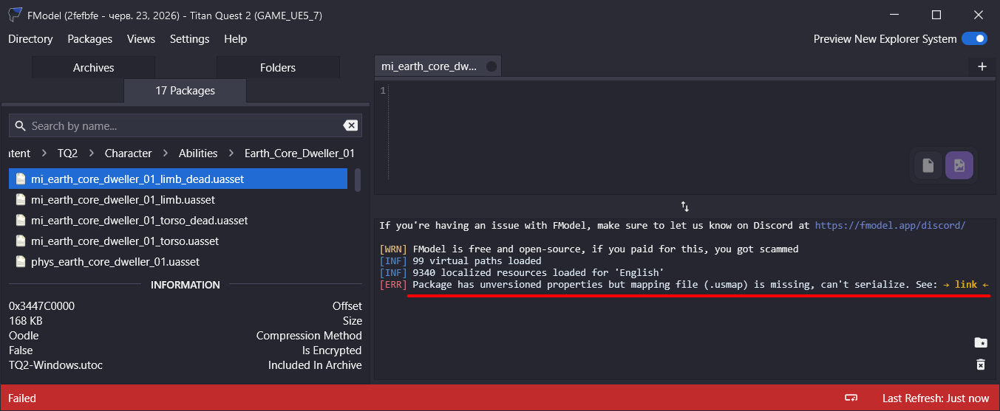
Як дістати .usmap:
Вам потрібен Dumper-7 та DLL Injector.
Можете скористатись моїм готовим архівом або скомпілюйте самі та знайдіть інджектор.
Як тільки побачите текст Generating SDK tools (*.*ms) можете закривати Командний рядок, при цьому гра також закриється.
Згенерований .usmap знайдете на системному диску у теці Dumper-7.
Правильне розпакування .uasset/.umap разом з .uexp
У вас при Export Data Raw в FModel експортується .uasset/.umap без .uexp? Вітаю, у вас Zen-контейнери.
Для роботи з ними потрібен retoc.
Шаблон команди для експорту потрібного файлу:
retoc --aes-key ВАШ_КЛЮЧ to-legacy --filter "/YourGame/Content/Some/Path/ФАЙЛ.uasset" "C:\Path\To\Game\Content\Paks" "C:\Path\To\OutputDir"
--aes-key можна не використовувати, якщо ваша гра його немає.
У моєму випадку з Life is Strange: Double Exposure команда виглядає ось так:
retoc to-legacy --filter "/Chronos/Content/Data/Localization" "E:\Games\Life is Strange - Double Exposure\Chronos\Content\Paks" "C:\Extract"
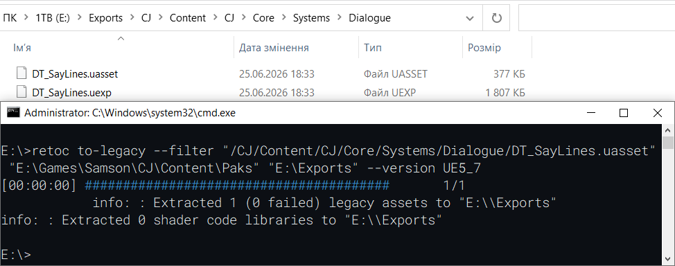
Правильний переклад захищених .uasset/.umap:
Раніше ми дістали .usmap з гри, тепер дістали .uasset+.uexp. Далі потрібен UAssetGUI, відкриваємо та імпортуємо наш .usmap.
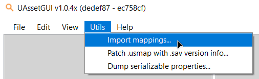
Після чого обираємо в правому куті програми наш .usmap зі списку, та версію рушія (її ми дізнались при інджекті .dll)
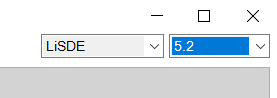
Після всіх дій відкриваємо наш .uasset:
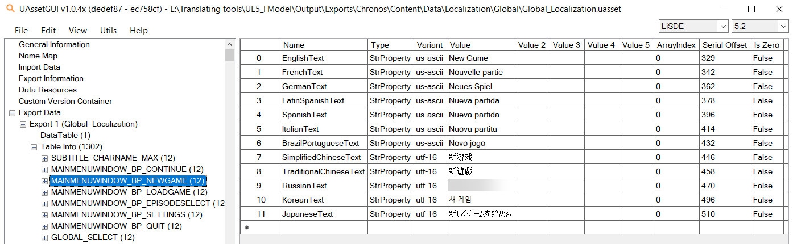
Я не рекомендую перекладати текст прямо в UAssetGUI. По-перше, в рядку англійського тексту постійно потрібно змінювати значення стовпця Variant з us-ascii на utf-16 (або utf-8 в залежності від гри) для підтримки кирилиці (інакше при збереженні і повторному відкритті .uasset у вас буде ???????? замість тексту). По-друге, це неефективна та марудна робота.
Для зручнішого перекладу натисніть File — Save As оберіть внизу Тип файлу .json та збережіть. У такому виді файлу не потрібно перейматись за значення стовпця Variant і можна перекладати спокійно рядки з текстом.
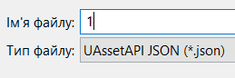
Такі .json файли також можна розпарсити та перекладати в .csv, але це робиться індивідуально для кожної гри, немає універсального інструменту, його потрібно писати власноруч, за допомогою ШІ, просити знайомих техніків або людей на дискорд серверах.
Після перекладу .json потрібно повернути в .uasset формат, для цього відкрийте його через UAssetGUI та натисніть Save, сформується .uasset+.uexp для імпорту в гру, впевніться, що назви файлів ідентичні з оригіналами з гри.
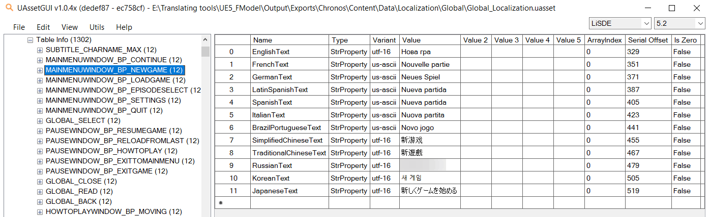
Заміна шрифтів
Коли поряд з .uasset немає файлу.ufont, а ви впевнені, що шрифт усередині .uasset+.uexp — знадобиться авторська програма UAsset Font Tool.
Приклад заміненого шрифту через програму:
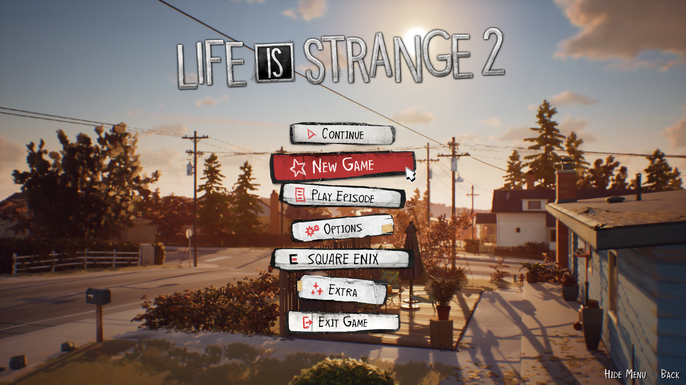
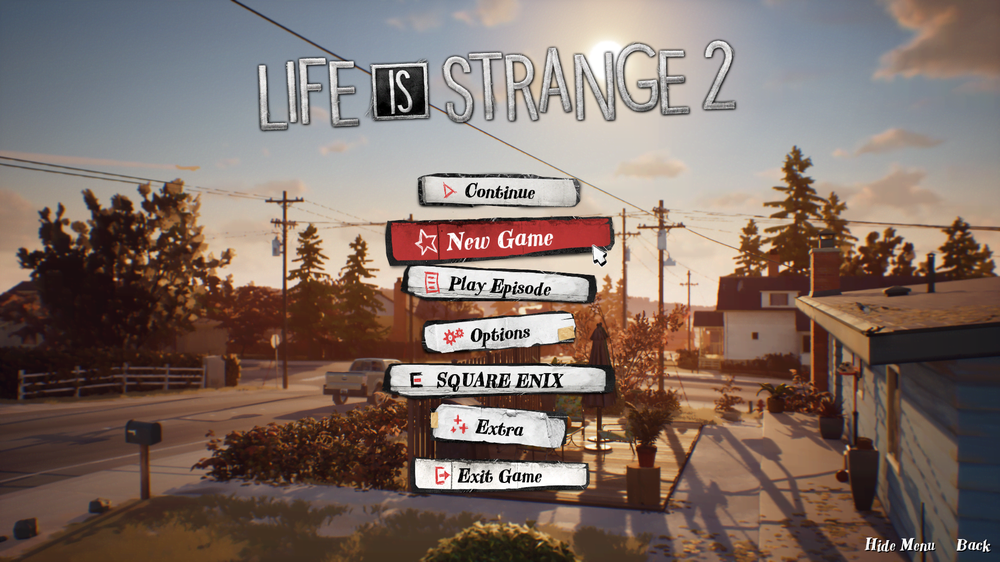
Пакування Zen-контейнерів
Для цього нам знову потрібен retoc.
Шаблон команди:
retoc to-zen ТЕКА ФАЙЛ.utoc --version UE*_*
У моєму випадку з Life is Strange: Double Exposure команда виглядає ось так:
retoc to-zen Exports pakchunk8-Windows_P.utoc --version UE5_2
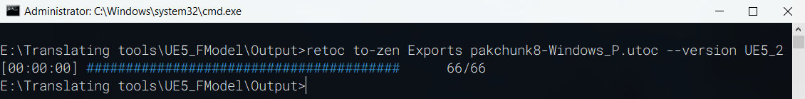
Результат виконаної роботи:
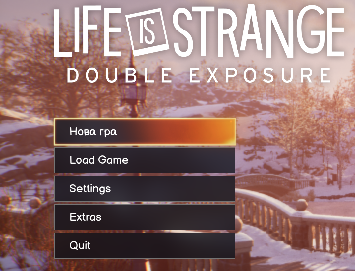
Неофіційна українська мова
У даній статті я описав метод можливого додавання української як окремої мови, зауважу, не всюди таке спрацює, якщо маєте бажання, можете спробувати на своїй грі.
Поради
Для перекладу тексту та порівняння з оригіналом зручно використовувати ExamDiff, саме Pro версію, яка підтримує усі compare-функції.
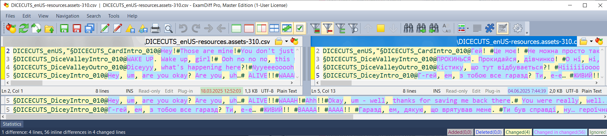
Для вводу символів … — – « » ’ ° зручно використовувати авторські швидкі клавіші на AutoHotkey (Тільки для Windows).